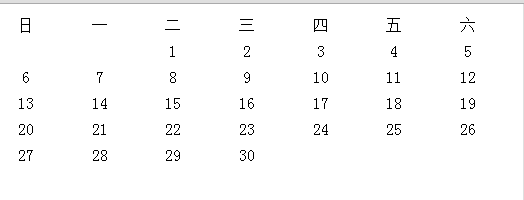
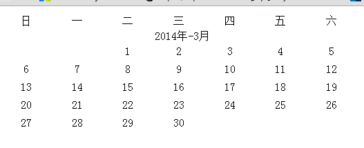
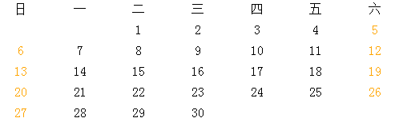
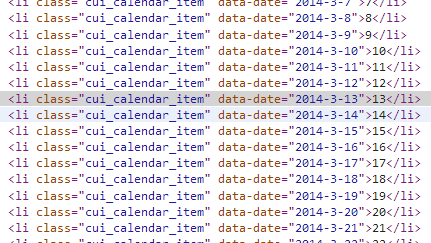
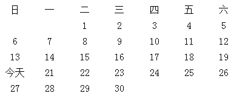
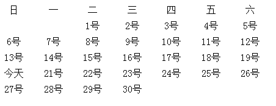

前言
最近开始整理我们的单页应用框架了，虽然可能比不上MVVM模式的开发效率，也可能没有Backbone框架模块清晰，但是好歹也是自己开发出来
而且也用于了这么多频道的东西，如果没有总结，没有整理，没有开源就太可惜了......所以最近开始整理框架相关的东西，争取抽象一点东西出来
框架出来还需要一点时间，但是框架会需要相关的UI库，这个东西可以先有思路，最后再根据框架做一点调整吧
日历对于UI插件而言还是比较难的，里面涉及到的东西很多，就阴历与阳历一块就有很多东西，然后涉及到很多算法，其中节日的设置更是有一定动态性
各种各样的需求也是莫名其妙，所以我们今天便来实现一个简单的日历插件吧，当然他的主要应用场景还是单页应用
构思
首先，我们这里用这套东西实现继承
var arr = []; var slice = arr.slice; function create() { if (arguments.length == 0 || arguments.length > 2) throw '参数错误'; var parent = null; //将参数转换为数组 var properties = slice.call(arguments); //如果第一个参数为类（function），那么就将之取出 if (typeof properties[0] === 'function') parent = properties.shift(); properties = properties[0]; function klass() { this.initialize.apply(this, arguments); } klass.superclass = parent; klass.subclasses = []; if (parent) { var subclass = function () { }; subclass.prototype = parent.prototype; klass.prototype = new subclass; parent.subclasses.push(klass); } var ancestor = klass.superclass && klass.superclass.prototype; for (var k in properties) { var value = properties[k]; //满足条件就重写 if (ancestor && typeof value == 'function') { var argslist = /^\s*function\s*\(([^\(\)]*?)\)\s*?\{/i.exec(value.toString())[1].replace(/\s/i, '').split(','); //只有在第一个参数为$super情况下才需要处理（是否具有重复方法需要用户自己决定） if (argslist[0] === '$super' && ancestor[k]) { value = (function (methodName, fn) { return function () { var scope = this; var args = [function () { return ancestor[methodName].apply(scope, arguments); } ]; return fn.apply(this, args.concat(slice.call(arguments))); }; })(k, value); } } klass.prototype[k] = value; } if (!klass.prototype.initialize) klass.prototype.initialize = function () { }; klass.prototype.constructor = klass; return klass; }
其次，我们的日历做出来应该是可定制化的，可定制化的粒度控制到每一个单元格，意思是每一个单元格是可操作的
这个时候最好的解决办法就是模板，并且释放一个操作某个日期的接口，比如我们现在要实现阴历节日或者阳历节日完全是实现抽象的日历，这样可以最大的提高扩展性
所以，我们这里的第一步是实现一个最基本的抽象日历
abstract.calendar
像日历这类插件，我首先还是想到用表格来做，但是CSS3的出现也能让我们的代码很好的实现，所以我这里使用li做，具体实现我们后面再说，我们要完成的第一个事情是
渲染当月
我们做的第一个事情是给一个日期，然后当月的数据便出来了，比如我们这里给的是20140420，就是当前日期，然后便需要形成这个月的日期，这里就涉及到一连串东西了
解决这个问题，我们需要第一个api，算出给定日期一共有多少天，第二步便是排列第一个日期为星期几即可
众所周知，计算月份天数时候有一个例外的情况便是闰年的二月，所以我们需要检查是否为闰年的接口，这个接口一般由公共日期类库提供
所以我们在做日历相关的过程中，完全可以整理一套日期的API出来，这也是今天一个任务
日期操作类库
这里首先给出两个接口，一个判断是否为闰年，一个判断一个月有多少天
var dateUtil = { // @description 是否为闰年 // @param year {num} 可能是年份或者为一个date时间 // @return {boolean} 返回值 isLeapYear: function (year) { //传入为时间格式需要处理 if ((typeof year == 'object') && (year instanceof Date)) year = year.getFullYear() if ((year % 4 == 0 && year % 100 != 0) || (year % 400 == 0)) return true; else return false; }, // @description 获取一个月份的天数 // @param year {num} 可能是年份或者为一个date时间 // @param year {num} 月份 // @return {num} 返回天数 getDaysOfMonth: function (year, month) { if ((typeof year == 'object') && (year instanceof Date)) { month = year.getmonth() + 1; //注意此处月份要加1 year = year.getFullYear(); } return [31, dateUtil.isLeapYear(year) ? 29 : 28, 31, 30, 31, 30, 31, 31, 30, 31, 30, 31][month]; } };
官方的getDay即可返回某天为星期几
0-6：星期天-星期六
所以，理论上我们给一个日期，就可以获得那一天的dom结构了，我们来试试，获取本月的日历数据
这里我们需要新增一个API告诉我们一年中的某一个月是由周几开始的
// @description 获取一个月份1号是星期几，注意此时的月份传入时需要自主减一 // @param year {num} 可能是年份或者为一个date时间 // @param year {num} 月份 // @return {num} 当月一号为星期几0-6 getBeginDayOfMouth: function (year, month) { if ((typeof year == 'object') && (year instanceof Date)) { month = year.getMonth(); //注意此处月份要加1 year = year.getFullYear(); } var d = new Date(year, month, 1); return d.getDay(); }
渲染dom
这个时候我们尝试生成我们的dom结构就出来了：

<style type="text/css"> ul, li { padding: 0; margin: 0; } .cui_calendar, .cui_week { list-style: none; } .cui_calendar li, .cui_week li { float: left; width: 14%; overflow: hidden; padding: 4px 0; text-align: center; } </style>
我们这里做一次简单的封装后，开始引入模板相关的东西，于是最后形成的东西：


<!DOCTYPE html PUBLIC "-//W3C//DTD XHTML 1.0 Transitional//EN" "http://www.w3.org/TR/xhtml1/DTD/xhtml1-transitional.dtd"> <html xmlns="http://www.w3.org/1999/xhtml"> <head> <title></title> <style type="text/css"> ul, li { padding: 0; margin: 0; } .cui_calendar, .cui_week { list-style: none; } .cui_calendar li, .cui_week li { float: left; width: 14%; overflow: hidden; padding: 4px 0; text-align: center; } </style> </head> <body> <script src="zepto.js" type="text/javascript"></script> <script src="underscore-min.js" type="text/javascript"></script> <script type="text/javascript"> var arr = []; var slice = arr.slice; /** * @description inherit方法，js的继承，默认为两个参数 * @param {function} supClass 可选，要继承的类 * @param {object} subProperty 被创建类的成员 * @return {function} 被创建的类 */ var inherit = function () { // @description 参数检测，该继承方法，只支持一个参数创建类，或者两个参数继承类 if (arguments.length == 0 || arguments.length > 2) throw '参数错误'; var parent = null; // @description 将参数转换为数组 var properties = slice.call(arguments); // @description 如果第一个参数为类（function），那么就将之取出 if (typeof properties[0] === 'function') parent = properties.shift(); properties = properties[0]; // @description 创建新类用于返回 function klass() { this.initialize.apply(this, arguments); } klass.superclass = parent; klass.subclasses = []; if (parent) { // @description 中间过渡类，防止parent的构造函数被执行 var subclass = function () { }; subclass.prototype = parent.prototype; klass.prototype = new subclass; parent.subclasses.push(klass); } var ancestor = klass.superclass && klass.superclass.prototype; for (var k in properties) { var value = properties[k]; //满足条件就重写 if (ancestor && typeof value == 'function') { var argslist = /^\s*function\s*\(([^\(\)]*?)\)\s*?\{/i.exec(value.toString())[1].replace(/\s/i, '').split(','); //只有在第一个参数为$super情况下才需要处理（是否具有重复方法需要用户自己决定） if (argslist[0] === '$super' && ancestor[k]) { value = (function (methodName, fn) { return function () { var scope = this; var args = [function () { return ancestor[methodName].apply(scope, arguments); } ]; return fn.apply(this, args.concat(slice.call(arguments))); }; })(k, value); } } klass.prototype[k] = value; } if (!klass.prototype.initialize) klass.prototype.initialize = function () { }; klass.prototype.constructor = klass; return klass; }; var dateUtil = { // @description 是否为闰年 // @param year {num} 可能是年份或者为一个date时间 // @return {boolean} 返回值 isLeapYear: function (year) { //传入为时间格式需要处理 if ((typeof year == 'object') && (year instanceof Date)) year = year.getFullYear() if ((year % 4 == 0 && year % 100 != 0) || (year % 400 == 0)) return true; else return false; }, // @description 获取一个月份的天数 // @param year {num} 可能是年份或者为一个date时间 // @param year {num} 月份 // @return {num} 返回天数 getDaysOfMonth: function (year, month) { if ((typeof year == 'object') && (year instanceof Date)) { month = year.getMonth(); //注意此处月份要加1，所以我们要减一 year = year.getFullYear(); } return [31, dateUtil.isLeapYear(year) ? 29 : 28, 31, 30, 31, 30, 31, 31, 30, 31, 30, 31][month]; }, // @description 获取一个月份1号是星期几，注意此时的月份传入时需要自主减一 // @param year {num} 可能是年份或者为一个date时间 // @param year {num} 月份 // @return {num} 当月一号为星期几0-6 getBeginDayOfMouth: function (year, month) { if ((typeof year == 'object') && (year instanceof Date)) { month = year.getMonth(); //注意此处月份要加1 year = year.getFullYear(); } var d = new Date(year, month, 1); return d.getDay(); } }; var Calendar = inherit({ initialize: function () { this.dateObj = new Date(); this.rootBox = $('body'); //星期项目模板 this.weekDayItemTmpt = "<li><%=['日', '一', '二', '三', '四', '五', '六'][day] %></li>"; //星期包裹层模板，传入今天星期几，内部怎么实现自己来 this.weekDayTmpt = '<ul class="cui_week"><%for(var day = 0; day < 7; day++) { %> ' + this.weekDayItemTmpt + ' <%} %></ul>'; //各个单元格的模板，可以重写 this.itemTmpt = '<li class="cui_calendar_item"><%=day %></li>'; //无效项目模板 this.invalidTmpt = '<li class="cui_invalid"></li>'; //月份模板，给定当前年月，以及天数，第一天星期几，让用户自己构造月度日历模板 this.mouthTmpt = [ '<ul class="cui_calendar">', '<% for(var i = 0; i < _beginWeek; i++) { %>', this.invalidTmpt, '<% } %>', '<% for(i = 0; i < days; i++) { %>', '<% day = i + 1; %>', this.itemTmpt, '<% } %>', '</ul>' ].join(''); this._initDom(); }, _initDom: function () { var d = this.dateObj; //获取天数 var days = dateUtil.getDaysOfMonth(d); //获取那个月第一天时星期几 var _beginWeek = dateUtil.getBeginDayOfMouth(d); var weekDom = _.template(this.weekDayTmpt)(); var calendarDom = _.template(this.mouthTmpt, { _beginWeek: _beginWeek, days: days }); this.rootBox.append(weekDom); this.rootBox.append(calendarDom); } }); var c = new Calendar(); </script> </body> </html>
var Calendar = inherit({ initialize: function () { this.dateObj = new Date(); this.rootBox = $('body'); //星期项目模板 this.weekDayItemTmpt = "<li><%=['日', '一', '二', '三', '四', '五', '六'][day] %></li>"; //星期包裹层模板，传入今天星期几，内部怎么实现自己来 this.weekDayTmpt = '<ul class="cui_week"><%for(var day = 0; day < 7; day++) { %> ' + this.weekDayItemTmpt + ' <%} %></ul>'; //各个单元格的模板，可以重写 this.itemTmpt = '<li class="cui_calendar_item"><%=day %></li>'; //无效项目模板 this.invalidTmpt = '<li class="cui_invalid"></li>'; //月份模板，给定当前年月，以及天数，第一天星期几，让用户自己构造月度日历模板 this.mouthTmpt = [ '<ul class="cui_calendar">', '<% for(var i = 0; i < _beginWeek; i++) { %>', this.invalidTmpt, '<% } %>', '<% for(i = 0; i < days; i++) { %>', '<% day = i + 1; %>', this.itemTmpt, '<% } %>', '</ul>' ].join(''); this._initDom(); }, _initDom: function () { var d = this.dateObj; //获取天数 var days = dateUtil.getDaysOfMonth(d); //获取那个月第一天时星期几 var _beginWeek = dateUtil.getBeginDayOfMouth(d); var weekDom = _.template(this.weekDayTmpt)(); var calendarDom = _.template(this.mouthTmpt, { _beginWeek: _beginWeek, days: days }); this.rootBox.append(weekDom); this.rootBox.append(calendarDom); } });
这里将许多可能定制化的东西以模板的方式提了出来，比如我们的week，比如我们的月份模板，这里各个业务同事可以分别按照自己的需求进行扩展
这里定制的粒度完全由开发人员决定，他可以只定制各个项目，或者定制整个月份的模板，当然，我们这里需要传入的参数还不够，还需要增加
扩展
比如，我们要在每月上面显示当前是某年某月就需要更多的数据了，模板的扩展程度，很多时候取决于数据的完善性，这里年月属性我们都需要传入
所以我们模板处可以稍作修改就变成这个样子了：

var c = new Calendar({ mouthTmpt: [ '<div style="overflow: hidden; width: 100%; text-align: center;"><%=year %>年-<%=mouth %>月</div>', '<ul class="cui_calendar">', '<% for(var i = 0; i < beginWeek; i++) { %>', '<li class="cui_invalid"></li>', '<% } %>', '<% for(i = 0; i < days; i++) { %>', '<% day = i + 1; %>', '<li class="cui_calendar_item"><%=day %></li>', '<% } %>', '</ul>' ].join('')
又或者，我们想让周末变成橙色的话，我们需要这么干，并且再加一点数据，我们直接告诉每项当前的年月日，所以他自己可以做很多判断

var c = new Calendar({ itemTmpt: '<li class="cui_calendar_item" <% var d = new Date(year, month, day);
if(d.getDay() == 0 || d.getDay() == 6) %>style="color: orange; "<% %> ><%=day %></li>' });
然后我们得将相关属性赋予dom结构的一个属性，方便后续操作，很多时候事件相关我们还是得依赖dom之间的映射，动态为每个dom增加data-date属性，年月日之间-分割
因为日模板可以被复写，所以这里需要一个规范，如果这个规范没有了，可能导致日期操作失效

我们知道日期的月份由0开始，我们现在是四月，所以对应的月份却应该是3月
代码分解
经过前面的学习，我们简单的日历原型其实应该出来了，现在要对其中代码做一些优化
PS：其实现在代码比较少，优化点不多，我们首先将构造星期与日历相关dom结构的两个方法分离出来
_getWeekDom: function () { return _.template(this.weekDayTmpt)(); }, //description 获得某月的dom结构 _getMonthDom: function (year, month) { var d = new Date(year, month); //description 获取天数 var days = dateUtil.getDaysOfMonth(d); //description 获取那个月第一天时星期几 var _beginWeek = dateUtil.getBeginDayOfMouth(d); var weekDom = _.template(this.weekDayTmpt)(); return _.template(this.mouthTmpt, { year: d.getFullYear(), month: d.getMonth(), beginWeek: _beginWeek, days: days }); }, init: function () { this.rootBox.append(this._getWeekDom()); this.rootBox.append(this._getMonthDom(this.dateObj.getFullYear(), this.dateObj.getMonth())); }
其次，这里的dateObj比较关键，一旦出问题就会导致许多错误，所以我们最开始应该有一个验证的方法，验证是否是日期的方法当然该由dateUtil提供
这里不但需要验证是否为日期，还需要提供新的日期格式化方法，parseDate方法，用于转变常用日期字符串为日期
日期操作
首先验证日期我们简单一点
isDate: function (d) { if ((typeof d == 'object') && (d instanceof Date)) return true; return false; },
然后是比较复杂的转换字符串为日期对象，以及转换日期对象为常用字符串
格式化日期字符串parse
这句话的思考是可以匹配各种我们认为是日期格式的字符串，我们只需要告诉年月日的格式化方式或者位置即可，比如以下几种
2014年4月20日、2014420、2014-4-20、2014 4 20、2041/4/20
1 //将字符串转换为日期 2 //支持格式y-m-d ymd (y m r)以及标准的 3 parse: function (dateStr, formatStr) { 4 if (typeof dateStr === 'undefined') return null; 5 if (typeof formatStr === 'string') { 6 //首先取得顺序相关字符串 7 var arrStr = formatStr.replace(/[^ymd]/g, '').split(''); 8 if (!arrStr) return null; 9 var formatStr = formatStr.replace('y', '(\\{b}{4})'); 10 var formatStr = formatStr.replace('m', '(\\{b}{1,2})'); 11 var formatStr = formatStr.replace('d', '(\\{b}{1,2})'); 12 var formatStr = formatStr.replace(/\{b\}/g, 'd'); 13 14 var reg = new RegExp(formatStr, 'g'); 15 var arr = reg.exec(dateStr) 16 17 var dateObj = {}; 18 for (var i = 0, len = arrStr.length; i < len; i++) { 19 dateObj[arrStr[i]] = arr[i + 1]; 20 } 21 return new Date(dateObj['y'], dateObj['m'], dateObj['d']); 22 } 23 return null; 24 },
因为楼主正则不是很好，上面的代码应该不是最优写法，基本调用方法如下：
console.log( dateUtil.parse('2012-4-1', 'y-m-d'));
console.log(dateUtil.parse('2/4/2014', 'd/m/y'));
console.log(dateUtil.parse('2014 4 3', 'y m d'));
console.log(dateUtil.parse('2014年4月4日', 'y年m月d日'));
console.log(dateUtil.parse('2012-04-05', 'y-m-d'));
console.log(dateUtil.parse('06/4/2014', 'd/m/y'));
console.log(dateUtil.parse('2014 4 07', 'y m d'));
console.log(dateUtil.parse('2014年4月08日', 'y年m月d日'));
//输出结果
Tue May 01 2012 00:00:00 GMT+0800 (中国标准时间) 01.htm:229
Fri May 02 2014 00:00:00 GMT+0800 (中国标准时间) 01.htm:230
Sat May 03 2014 00:00:00 GMT+0800 (中国标准时间) 01.htm:231
Sun May 04 2014 00:00:00 GMT+0800 (中国标准时间) 01.htm:232
Sat May 05 2012 00:00:00 GMT+0800 (中国标准时间) 01.htm:233
Tue May 06 2014 00:00:00 GMT+0800 (中国标准时间) 01.htm:234
Wed May 07 2014 00:00:00 GMT+0800 (中国标准时间) 01.htm:235
Thu May 08 2014 00:00:00 GMT+0800 (中国标准时间)
从结果来看，返回时正确的，若是有什么不对，就再说吧。。。。。。
格式化日期为字符串format
上面我们将特殊字符串转换为了日期，我们还得有个借口将日期格式化为需要的字符串
这个网上有一个很不错的方案，这里直接抄了。。。。。。
console.log(dateUtil.format('YYYY年MM月DD日'));
console.log(dateUtil.format('YYYY-MM-DD'));
2014年4月20日 01.htm:251
2014-4-20
稍有不足便是没有进行1与01相关的选择，我们这里稍作修改，而且这里对我们上面的代码优化提出了方案，我们一并修改
function formatDate(date, format) { if (arguments.length < 2 && !date.getTime) { format = date; date = new Date(); } typeof format != 'string' && (format = 'YYYY年MM月DD日 hh时mm分ss秒'); var week = ['Sunday', 'Monday', 'Tuesday', 'Wednesday', 'Thursday', 'Friday', 'Saturday', '日', '一', '二', '三', '四', '五', '六']; return format.replace(/YYYY|YY|MM|DD|hh|mm|ss|星期|周|www|week/g, function(a) { switch (a) { case "YYYY": return date.getFullYear(); case "YY": return (date.getFullYear()+"").slice(2); case "MM": return date.getMonth() + 1; case "DD": return date.getDate(); case "hh": return date.getHours(); case "mm": return date.getMinutes(); case "ss": return date.getSeconds(); case "星期": return "星期" + week[date.getDay() + 7]; case "周": return "周" + week[date.getDay() + 7]; case "week": return week[date.getDay()]; case "www": return week[date.getDay()].slice(0,3); } }); }
format: function (date, formatStr) { if (arguments.length < 2 && !date.getTime) { format = date; date = new Date(); } typeof format != 'string' && (format = 'Y年M月D日 H时F分S秒'); return format.replace(/Y|y|M|m|D|d|H|h|F|f|S|s/g, function (a) { switch (a) { case "y": return (date.getFullYear() + "").slice(2); case "Y": return date.getFullYear(); case "m": return date.getMonth() + 1; case "M": return dateUtil.formatNum(date.getMonth() + 1); case "d": return date.getDate(); case "D": return dateUtil.formatNum(date.getDate()); case "h": return date.getHours(); case "H": return dateUtil.formatNum(date.getHours()); case "f": return date.getMinutes(); case "F": return dateUtil.formatNum(date.getMinutes()); case "s": return date.getSeconds(); case "S": return dateUtil.formatNum(date.getSeconds()); } }); },
由于这里月与分钟都是以m开头，这里会有问题，所以我这里可耻的将分改为F。。。。。。
对应日期处理工厂现在变成这个样子了
1 var dateUtil = { 2 formatNum: function (n) { 3 if (n < 10) return '0' + n; 4 return n; 5 }, 6 //将字符串转换为日期 7 //支持格式y-m-d ymd (y m r)以及标准的 8 parse: function (dateStr, formatStr) { 9 if (typeof dateStr === 'undefined') return null; 10 if (typeof formatStr === 'string') { 11 //首先取得顺序相关字符串 12 var arrStr = formatStr.replace(/[^ymd]/g, '').split(''); 13 if (!arrStr && arrStr.length != 3) return null; 14 15 var formatStr = formatStr.replace(/y|m|d/g, function (k) { 16 switch (k) { 17 case 'y': return '(\\d{4})'; 18 case 'm': ; 19 case 'd': return '(\\d{1,2})'; 20 } 21 }); 22 23 var reg = new RegExp(formatStr, 'g'); 24 var arr = reg.exec(dateStr) 25 26 var dateObj = {}; 27 for (var i = 0, len = arrStr.length; i < len; i++) { 28 dateObj[arrStr[i]] = arr[i + 1]; 29 } 30 return new Date(dateObj['y'], dateObj['m'], dateObj['d']); 31 } 32 return null; 33 }, 34 //将日期格式化为字符串 35 format: function (date, formatStr) { 36 if (arguments.length < 2 && !date.getTime) { 37 format = date; 38 date = new Date(); 39 } 40 typeof format != 'string' && (format = 'Y年M月D日 H时F分S秒'); 41 return format.replace(/Y|y|M|m|D|d|H|h|F|f|S|s/g, function (a) { 42 switch (a) { 43 case "y": return (date.getFullYear() + "").slice(2); 44 case "Y": return date.getFullYear(); 45 case "m": return date.getMonth() + 1; 46 case "M": return dateUtil.formatNum(date.getMonth() + 1); 47 case "d": return date.getDate(); 48 case "D": return dateUtil.formatNum(date.getDate()); 49 case "h": return date.getHours(); 50 case "H": return dateUtil.formatNum(date.getHours()); 51 case "f": return date.getMinutes(); 52 case "F": return dateUtil.formatNum(date.getMinutes()); 53 case "s": return date.getSeconds(); 54 case "S": return dateUtil.formatNum(date.getSeconds()); 55 } 56 }); 57 }, 58 // @description 是否为为日期对象，该方法可能有坑，使用需要慎重 59 // @param year {num} 日期对象 60 // @return {boolean} 返回值 61 isDate: function (d) { 62 if ((typeof d == 'object') && (d instanceof Date)) return true; 63 return false; 64 }, 65 // @description 是否为闰年 66 // @param year {num} 可能是年份或者为一个date时间 67 // @return {boolean} 返回值 68 isLeapYear: function (year) { 69 //传入为时间格式需要处理 70 if (dateUtil.isDate(year)) year = year.getFullYear() 71 if ((year % 4 == 0 && year % 100 != 0) || (year % 400 == 0)) return true; 72 else return false; 73 }, 74 75 // @description 获取一个月份的天数 76 // @param year {num} 可能是年份或者为一个date时间 77 // @param year {num} 月份 78 // @return {num} 返回天数 79 getDaysOfMonth: function (year, month) { 80 if (dateUtil.isDate(year)) { 81 month = year.getMonth(); //注意此处月份要加1，所以我们要减一 82 year = year.getFullYear(); 83 } 84 return [31, dateUtil.isLeapYear(year) ? 29 : 28, 31, 30, 31, 30, 31, 31, 30, 31, 30, 31][month]; 85 }, 86 87 // @description 获取一个月份1号是星期几，注意此时的月份传入时需要自主减一 88 // @param year {num} 可能是年份或者为一个date时间 89 // @param year {num} 月份 90 // @return {num} 当月一号为星期几0-6 91 getBeginDayOfMouth: function (year, month) { 92 if ((typeof year == 'object') && (year instanceof Date)) { 93 month = year.getMonth(); //注意此处月份要加1 94 year = year.getFullYear(); 95 } 96 var d = new Date(year, month, 1); 97 return d.getDay(); 98 } 99 };
日期操作接口
既然是日期，一定会有日期项目的操作，我们这里需要提供一个接口将某一项交给用户操作
这个接口本身不是很难，比较烦的一个时期，就是这里传入的月份是否应该加1的问题
比如我们操作的明明是4月却要这样写2014-3-20，这个事情比较烦，所以建议传日期对象算了
//操作每一个日期 handleDay: function (dateStr, fn) { if (dateUtil.isDate(dateStr)) dateStr = dateUtil.format(dateStr, 'Y-m-d'); var el = this.root.find('[data-date="' + dateStr + '"]'); if (typeof fn == 'function') fn(el, dateUtil.parse(dateStr, 'y-m-d'), this); } var c = new Calendar({ }); c.handleDay(new Date(), function (el, date, calendar) { el.html('今天'); });

这个的好处是什么呢，若是我们有一个需求需要修改某一个星期，或者几个连续工作日的属性便可以如此操作，但是需要操作每个dom结构似乎有点不舒服
比如我们现在要去这个月周三高亮显示，这个时候我们的日历还需要提供一个接口，让外面可以对自己做遍历操作
遍历操作结构eachDay
eachDay: function (fn) { var els = this.root.find('[data-date]'); if (typeof fn == 'function') fn(els); } c.eachDay(function (els) { $.each(els, function (i, el) { el = $(el); el.html(el.html() + '号'); }); }); c.handleDay(new Date(), function (el, date, calendar) { el.html('今天'); });

这里依旧有一个问题：DOM操作太多了，这个方案有问题，所以我们还得优化
事件绑定
待续......
结语
今天太晚了，我们下次继续